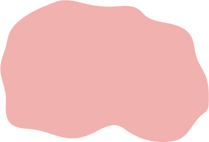
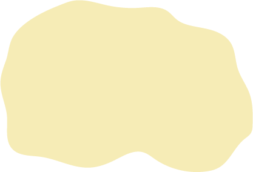
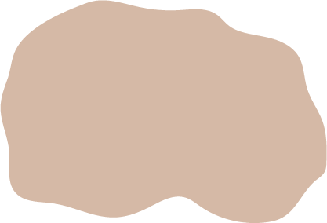
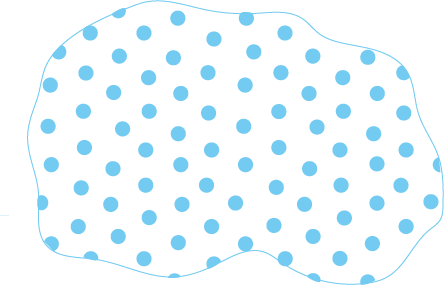

Розселення культурно-історичних спільнот у неоліті (7 – 5 тис. р. тому)
Ареали поширення культур та пам'ятки культур
| Кріш та розписної кераміки | ||
| Лінійно-стрічкової кераміки | ||
| Бузько-дністровська | ||
| Німанська (волинська) | ||
| Дніпровсько-донецька (Києво-черкаська) | ||
|  | Ямково-гребінцевої кераміки | |
|  | Донецька | |
| Сурська | ||
| Азово-дніпровська (ранній період) | ||
| Пам'ятки типу Олексіївської Засухи | ||
|  | Таш-аїрська | |
|  | Лизогубівська |
| Межа поширення землеробських культур |